Creating a Panther Image on a USB
Parts and Materials Required
- Panther System Image as per System Software Installation Technical Bulletin
- Rufus USB Creation Software
 Kanguru Lockable USB Drive
Kanguru Lockable USB Drive
Time Required
- 20 Minutes
Procedure
Create a Panther Image on USB Drive

|
Note— Screen shots below are for reference ONLY. |
|
|
Note— When removing a USB Drive always remember to use the Safely Remove button. |
|
|
Note— The FSE Laptop user MUST have Administrator privileges. |
- Perform the following steps on an FSE laptop.
- Download (from Agile or BOX) a local copy of the Panther System Image as listed in the respective System Software Installation Technical Bulletin.
- Perform a SHA256 CRC on the downloaded file.
- Set the Kanguru SS3 USB Flash Drive lock to the UNLOCKED position.
- Insert a blank Kanguru SS3 USB Flash drive into the FSE Laptop.
- Launch Rufus.
Note—DO NOT update Rufus. Use version 3.5.1497. 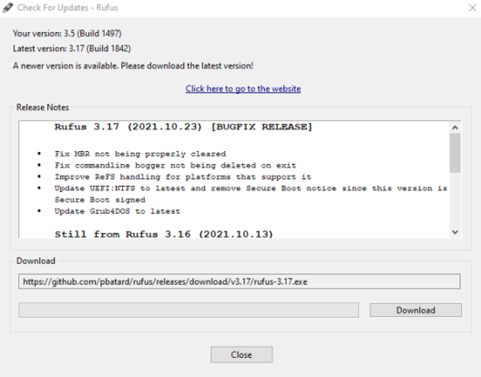
- Clear USB Partitions (if any)
- Select START.
- Accept the warning message.
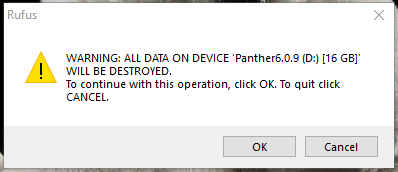
- Select Close.
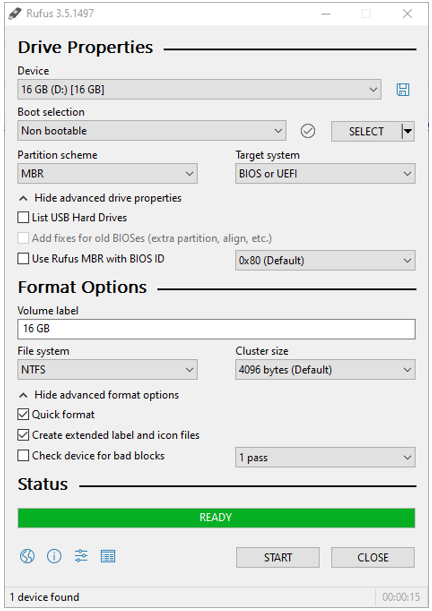
- Launch Rufus.
Note—DO NOT update Rufus. Use version 3.5.1497. 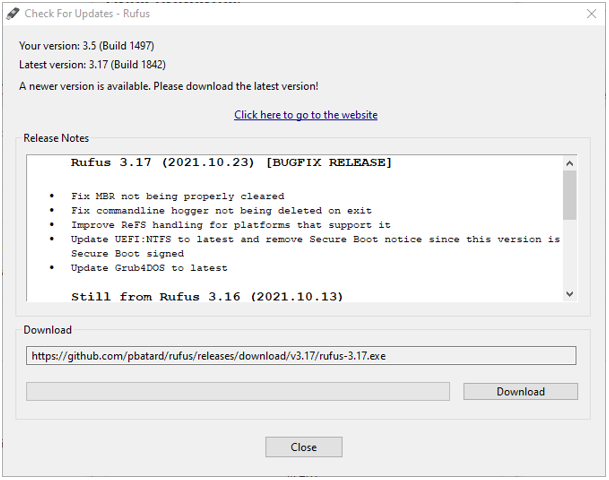
- From the Device drop-down menu, select the desired USB to write to.
Rufus will auto-select removable drives. - For Boot selection, select Disk or ISO image (Please select).
- Use the SELECT button to locate the .iso.
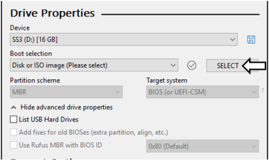
- Navigate to and select the local copy of the Panther Image .iso.
Note—Image below is for reference only. 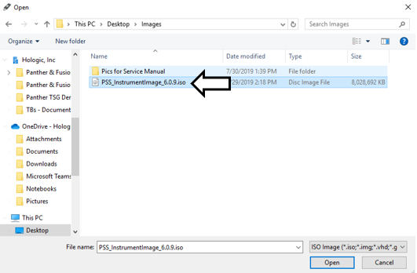
- Rufus will automatically select the partition scheme and target system.
Note—Do not change these settings. - Change the Volume label to PantherImage6_X_X.iso.
- Verify the File System is NTFS.
- The Rufus configuration should look like the image below.
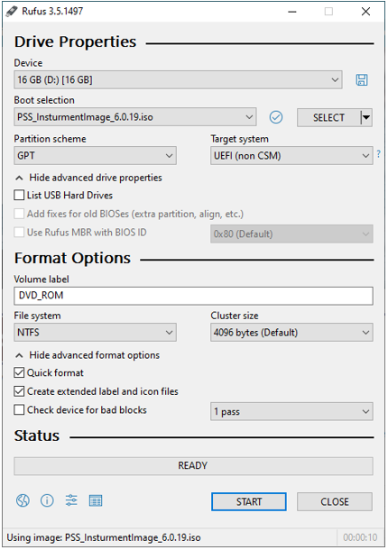
- Select START.
- Rufus will begin writing the Image to the USB drive.
A Status bar will indicate progress. Image writing can take up to 10 min.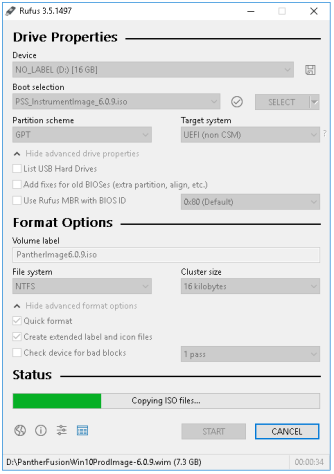
- Once finished, accept the completion message and select Close to close Rufus.
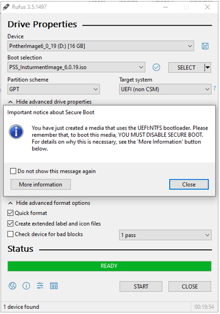
- On the FSE Laptop, open Windows Explorer and navigate to This PC.
- Verify that two partitions were created on the USB Flash drive.
You might have to remove the USB and re insert the USB to confirm all partitions.- UEFI_NTFS
- PantherImageX_0_X
Note—If you are using a Windows 7 Laptop, you will only see one partition. 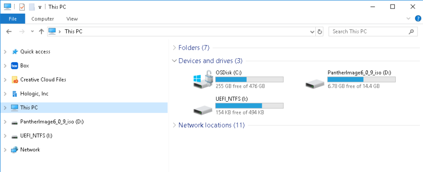
- Open the PantherImageX_0_X and delete the two autorun files.
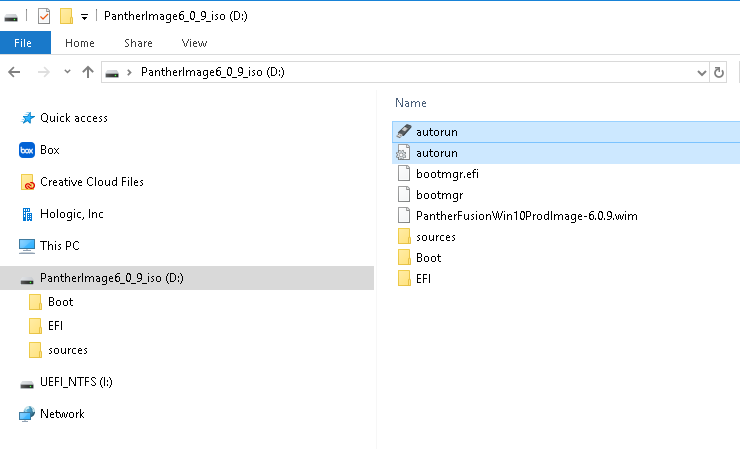
- Safely remove the USB drive.
- Move the drive's lock to the locked position.
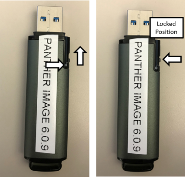
- Cover the lock with a Do Not Tamper With sticker.

 button at the top of the page to send feedback, comments, or change requests.
button at the top of the page to send feedback, comments, or change requests.